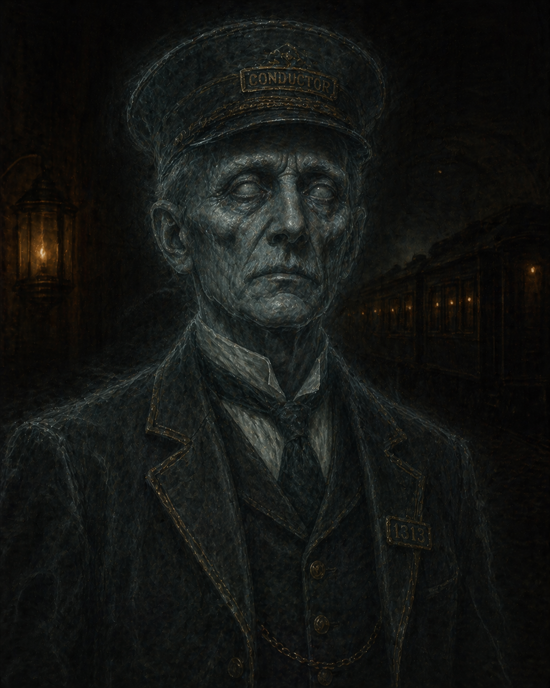

Ghost Train
The Conductor
Bound to the 5th Line. Enforced its rules. Vanished before the score ended. He is not done.
What He Was
- The conductor of the 5th Line — bound to his duty after the crash that turned the train into a ghost phenomenon
- Enforced the train's internal rules: tickets, passenger conduct, no cargo interference
- Spoke in the present tense about a route that ended decades ago — he may not have fully known the crash happened
- Not hostile by default — only when the rules were violated
What He Is Now
Unresolved — Session 06
The Conductor vanished from the train before the Ghost Train score ended. He did not dissipate. He did not die. The crew removed the Reliquary — the object he was effectively bound to protect — and he was gone before they escaped. Where did he go? What does a conductor do when the cargo has been stolen?
Personality
- Bureaucratic — the rules matter because they are the rules
- Duty-bound beyond death — he kept doing his job long after anyone would have expected
Possible Directions
- He follows the Reliquary — now that it's in Scurlock's hands, he may turn up there
- He's free of his loop and loose in the city — a ghost with purpose and no route to run
- He holds information about the original transport: who ordered it, what went wrong, who should have been held responsible